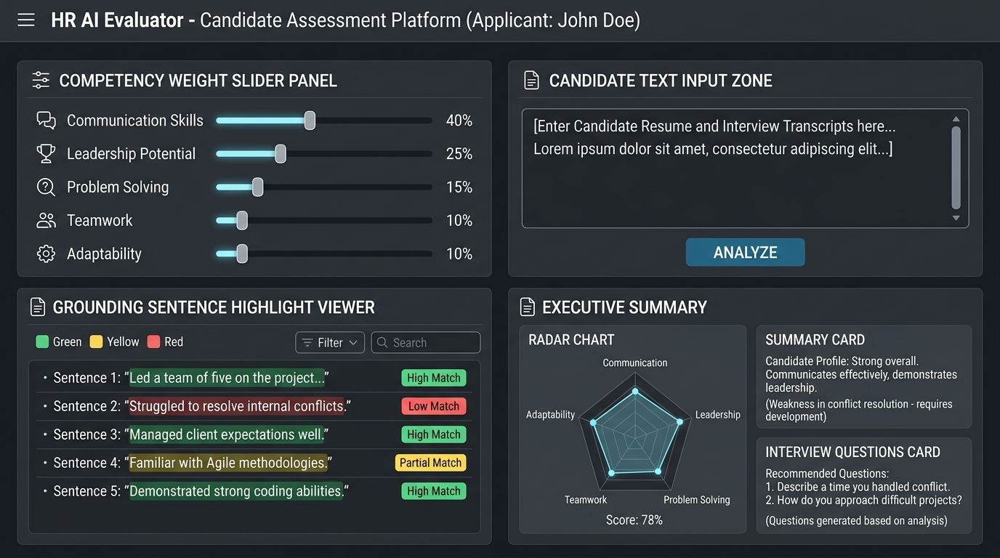
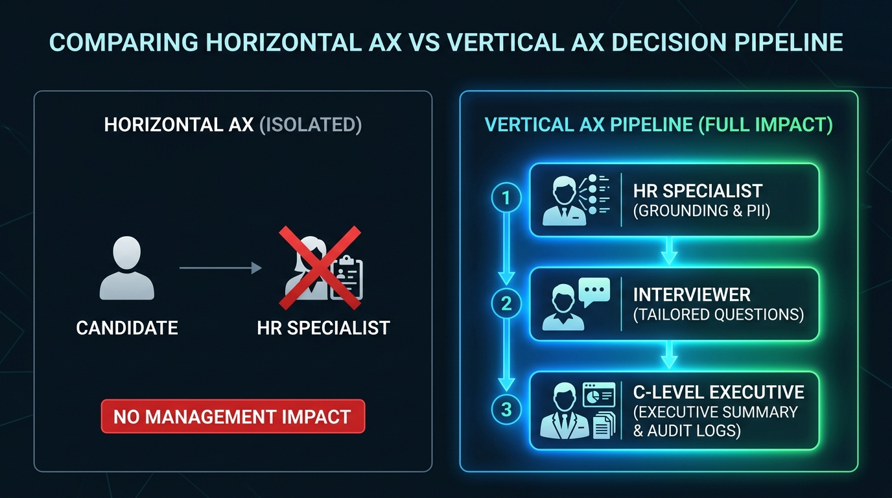
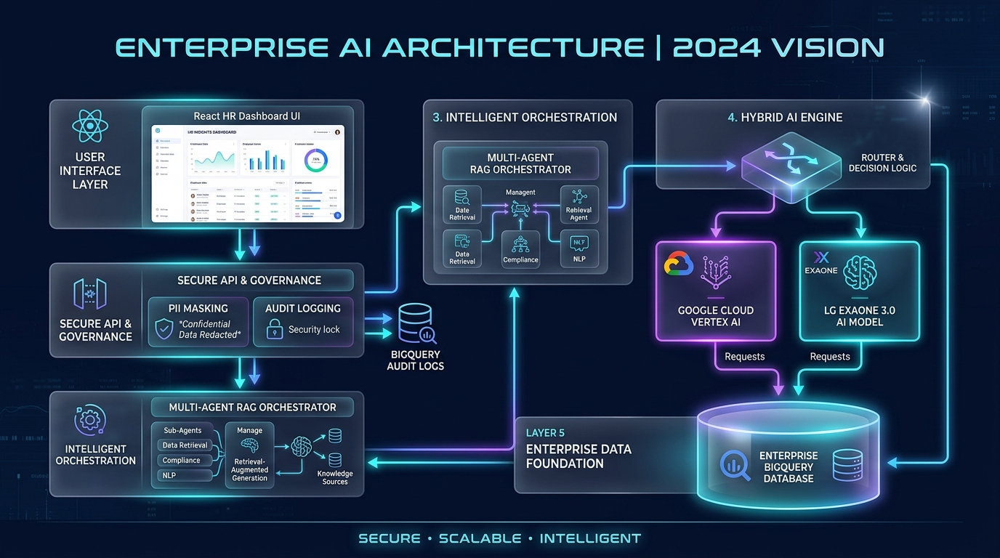

문제 정의 (Problem Definition)
공고당 서류 폭주 ➔ 검토에만 80~100시간 매몰
구직자 대부분 AI 활용 ➔ 영혼 없는 자소서 급증
주관적 검증 부실 ➔ 조기 퇴사율 27.5% 초래
2. AI가 human-in-the-loop 없이 최종 합/불 독단 결정
2. Human-in-the-Loop: AI는 원문 근거만 제시, 최종 판단은 100% 인사권자가 수행
사용자 (User Personas & Pain Points)
핵심 가치 (Core Value)
실제 성과 문장 캡처
수식어 거품 제거 ➔ 수치 성과 문장 캡처
원문 근거 100% 증명
"왜 85점인가?" ➔ 본문 원문 근거 증명
서류 ➔ 면접 직결
서류 약점 ➔ 구조화 면접 질문 연동
💡 "AI는 사람을 대체하는 인사권자가 아니라, 사람의 판단을 돕고 채용을 더 공정하고 효율적으로 발전시키는 100% 근거 보조 솔루션입니다."
HR 자소서를 넘어 R&D 특허 분석, 기술 보고서 스크리닝, 법무 계약서 리스크 검증 등 기업 내 모든 비정형 문서 텍스트에 동일 엔진 100% 이식 가능
인사 가중치 슬라이더처럼 R&D 부서에서도 "신규성 40%, 기술난이도 30%, 실험충실도 30%" 등 부서별 커스텀 배점 기준표를 1초 만에 유연 적용
Express Gateway + GCP Vertex AI + BigQuery Audit 3-Tier 아키텍처로 설계되어 사내 전체 VPC 인프라 및 멀티 LLM(RAG DB)으로 무제한 연동 확장
전체 평가 파이프라인 관장, 5대 역량 점수 통합 정산 및 1클릭 서류 승인 결재
자소서 본문속 수치 성과 1:1 매칭 및 Substring Offset 백그라운드 인덱싱
2차 비판 검증 (환각/과장/PII 검증, 원문 유사도 < 85% 시 🟡 면접검증 강제전환)
Critic이 포착한 🔴/🟡 약점 문장 조준 맞춤 심층 질문 3종 & 검증 체크리스트 추출
단순 요약을 넘어 자소서 본문 100% Grounding 캡처(🟢🔴🟡) 및 PII 마스킹 적용 ➔ 서류 검토 시간 90% 감축
서류 약점·리스크 문장 기반 맞춤형 심층 면접 질문 3종 & 검증 체크리스트 자동 생성 ➔ 면접 준비시간 0분 연동
지원자 매트릭스 비교 + 1클릭 Executive Summary 보고서 + BigQuery Audit Logs ➔ 데이터 기반 확신 있는 최종 채용 판단


실현 가능성 & 12주 개발 로드맵 (Feasibility & 12-Week Roadmap)
Grounding 엔진, 역량 슬라이더, Vertex AI 프록시 게이트웨이 완수
Web Worker 백그라운드 파싱, 비동기 렌더링(60fps), Vitest 단원 테스트
Levenshtein 오타 매칭 엔진 & PII 자동 익명화 마스킹 필터
pdfjs-dist 대량 파일 파싱, IndexedDB 로컬 캐싱 & Rate Limit Queue
기업 맞춤 프롬프트 에디터, 자소서 상호 표절율 매트릭스, 종합 검증
시스템 설명 (User Flow & System Architecture)
🔄 시스템 5단계 유저 플로우 (User Journey Flow)
직무별 5대 역량 슬라이더 비중 조절
Gateway에서 전화번호/이메일 익명화 선처리
Gemini 2.5/1.5 Flash 근거 문장 캡처
레이더 차트 & 원문 위 🟢/🔴 1:1 하이라이트
서류 약점 기반 면접질문지 & 1클릭 PDF 인쇄
🏗️ 대기업 엔터프라이즈 시스템 아키텍처 & LG EXAONE 3.0 하이브리드 연동

graph TB
subgraph Client_Layer ["1. Client SPA Layer (React 18 + Vite)"]
UI_Dashboard["HR Assessment Dashboard"]
UI_Criteria["Dynamic 5-Competency Slider"]
UI_Viewer["Exact/Fuzzy Grounding Evidence Viewer"]
end
subgraph Backend_Gateway_Layer ["2. Enterprise API Gateway & REST Server (Node.js)"]
Express_Server["Express Gateway REST Server (3001 Port)"]
PII_Filter["PII Anonymizer (Regex Masking)"]
Auth_Validator["GCP IAM OAuth 2.0 Bearer Validator"]
end
subgraph Agent_RAG_Layer ["3. AI Multi-Agent & RAG Engine"]
Agent_Orchestrator["HR Multi-Agent Orchestrator Pipeline"]
RAG_VectorDB[("Vector DB: GCP Vector Search / ChromaDB")]
Company_Rubric["Company Rubrics & Talent Criteria RAG"]
end
subgraph Database_Storage_Layer ["4. Enterprise Database & Cloud Storage"]
Relational_DB[("Cloud SQL / PostgreSQL (Applicants & Jobs DB)")]
BigQuery[("Google BigQuery (Audit Trail Log Storage)")]
GCS[("Cloud Storage (Document Vault)")]
end
subgraph GCP_Enterprise_AI ["5. Hybrid AI Enterprise Platform"]
VertexAI["Google Cloud Vertex AI (Gemini 2.5 / 1.5 Flash)"]
ExaoneAI["LG EXAONE 3.0 Enterprise Model (Hybrid Router)"]
end
UI_Dashboard & UI_Criteria --> Express_Server
Express_Server --> PII_Filter
PII_Filter --> Auth_Validator
Auth_Validator --> Relational_DB
Auth_Validator --> Agent_Orchestrator
Agent_Orchestrator --> RAG_VectorDB
Company_Rubric --> RAG_VectorDB
Agent_Orchestrator --> VertexAI & ExaoneAI
Auth_Validator --> BigQuery
VertexAI & ExaoneAI --> GCS
VertexAI & ExaoneAI --> UI_Viewer
🛠️ 기술 스택 선정 이유 & 타당성 근거 (Technical Rationale)
| 기술 구성 요소 | 선정 기술 스택 | 기술 선정 및 아키텍처 타당성 근거 (Technical Rationale) |
|---|---|---|
| Frontend SPA | React 18 + Vite 6 + Tailwind CSS | 컴포넌트 단위 실시간 가중치 슬라이더 UI 렌더링, Vite의 HMR 빌드 생산성, Tailwind 기반 모던 다크모드 대시보드. |
| Backend Gateway Server | Node.js Express Proxy Gateway (server/proxyServer.js) | 브라우저단 API Key 노출 100% 방지(3-Tier 보안), REST API 엔드포인트 수립, CORS 허용 및 GCP Service Account OAuth2 자동 갱신. |
| Relational DB | GCP Cloud SQL / PostgreSQL / IndexedDB | 지원자 인적사항, 채용 공고, 세부 역량 점수 트랜잭션의 ACID 영구 보장 및 브라우저 IndexedDB 로컬 빠른 캐싱. |
| Vector DB & RAG | GCP Vector Search / ChromaDB (Milestone 5) | 기업별 맞춤 인재상, 직무별 평가 기준표, 금기어/필수 키워드를 벡터화하여 AI 평가 시 RAG Context로 주입. |
| AI Engine & Multi-Agent | Google Cloud Vertex AI + HR Multi-Agent Pipeline | 대기업 표준 Zero Data Retention 준수, Supervisor ➔ Grounding ➔ Critic ➔ Interviewer 4대 에이전트 앙상블 파이프라인. |
| Security & Audit | Regex PII Anonymizer + BigQuery Audit Logs | 개인정보보호법 및 블라인드 채용 준수, 평가자 IP 및 원문 근거 캡처 내역의 100% 감사 이력 보존. |